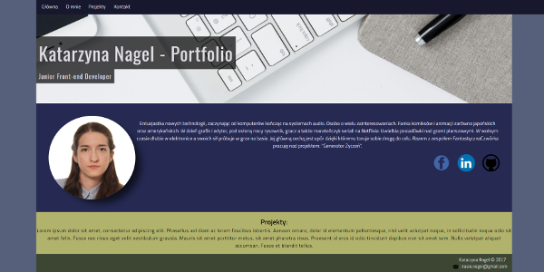
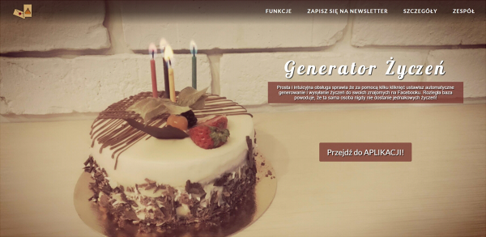
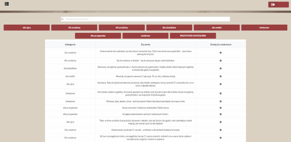

Entuzjastka nowych technologii, zaczynając od komputerów kończąc na systemach audio. Osoba o wielu
zainteresowaniach. Fanka komiksów i animacji zarówno japońskich jak i amerykańskich. Fanka alternatywnych metod parzenia kawy.
W dzień grafik i edytor,
pod osłoną nocy rysownik, gracz a także maratończyk seriali na Netflixie. Uwielbia posiadówki nad grami
planszowymi. W wolnym czasie dłubie w elektronice i amatorsko gra na bassie. Jej główną cechą
jest upór dzięki któremu toruje sobie drogę do celu. Absolwentka kursu Front-end Developer w infoShare Academy.
Projekty:
Strona portfolio
Strona aplikacji "Generator Życzeń" realizowana wspólnie
z zespołem Fantastyczna Czwórka.
Aplikacja "Generator życzeń"